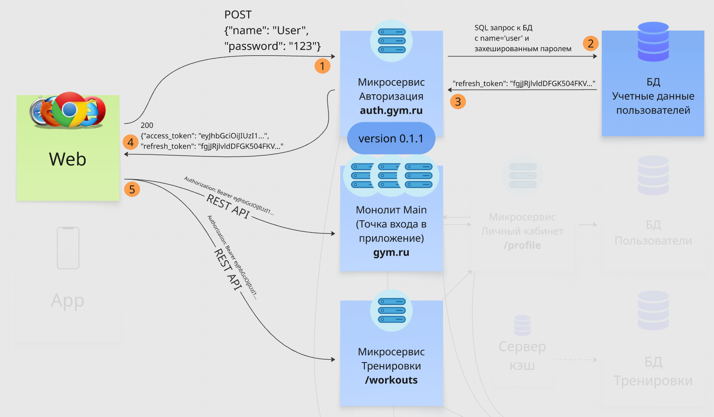

Разберись в чем разница между идентификацией, аутентификацией и авторизацией, а затем посмотрим два самых популярных механизма авторизации.
Идентификация — проверка логина/email на соответствие в БД. Например, типичный пример работы идентификации — при попытке зарегистрироваться на уже существующий email, система выводит ошибку (тултип).
Аутентификация — проверка логина/email и пароля на соответствие в БД. Например, когда ты неправильно ввел свои креды и нажал «войти», уходит POST запрос и возвращается 401 ошибка, значит, введенные данные отличаются от тех, что в БД, и попасть на сайт ты не можешь.
Авторизация — выдача доступа к ресурсу и соответствующих прав, если таковые есть. Например, ты успешно зашел в свой аккаунт, но решил ввести в URL админский домен (например, admin.gym.ru). Для твоего логина прав в админку нет, а значит тебя развернет 403 ошибкой, которая сообщает о запрете доступа к этому ресурсу.
Посмотри как устроены 2 самых популярных механизма авторизации:
Через сессии (куки, session storage) — после авторизации через хэдер ответа Set-Cookie выдается кука с сессией (обычно называется session_id или как-то так), при каждом последующем запросе передается в хэдере запроса Cookie. Как правило обновляются после перелогинивания, либо задается время жизни через хэдер Max-Age
Через JWT токен (JSON Web Token) — после авторизации выдается access_token и refresh_token в JSON в теле ответа (например, POST запроса на авторизацию). Аксесс живет недолго, обычно не больше 15 минут, рефреш живет долго и нужен для обновления аксесс токена рефреш запросами (например, это может быть ручка auth.gym.ru/refresh, а js будет контролировать логику отправки такого запроса раз в 15 минут). JWT несет в себе полезную инфу, можно декодировать, например, через jwt.io
Через OAuth, OAuth 2.0 — используют внешние сервисы авторизации (например, VK, Google)
